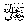
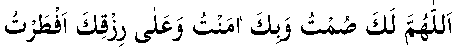
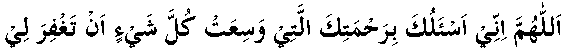
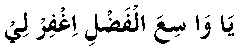

Abu Saeed al-Khudreerelates that Rasulullahsaid: “During each day and night of Ramadhaan, Allah 
Note: Besides this Hadeeth, there are many others saying that the dua of a fasting person is accepted (mustajaab). In one Hadeeth, we read that the dua is accepted at the time of breaking the fast, but we are generally so busy eating, that we lose this chance.
The well known dua for breaking the fast is often forgotten:

“Allaahumma laka sumto wa bika aamantu wa alayka tawakkaltu wa alaa rizqika aftar tu”
(O Allah for You have I fasted, in You do I believe, and on You do I rely, and now I break this fast with food coming from You.)
Abdullah Ibn Amrused to make the following dua when breaking the fast.

“Allaa-humma innee as’aluka bi-rahmatikallatee wasita kulla shayin an taghfira lee”
(O Allah, I beg You, through Your infinite mercy, which surrounds all things, to forgive me.)
In some books we read that Rasulullahused to say:

“Yaa waasi al-fadli-igh-firlee”
(O You who give Great Bounties, forgive me.)
There are many other duas to be read when breaking the fast, but no special dua is fixed. This time (at breaking the fast) is a time when duas are accepted; ask and put all your needs before Allah(and, if you remember, then make dua for me too).